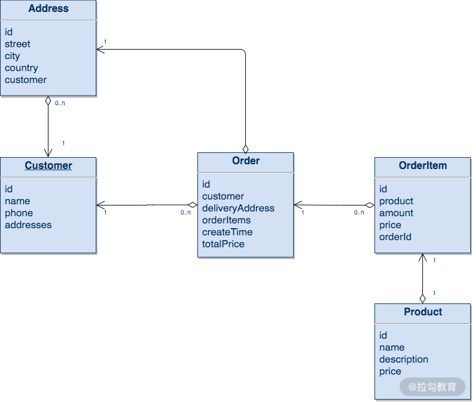
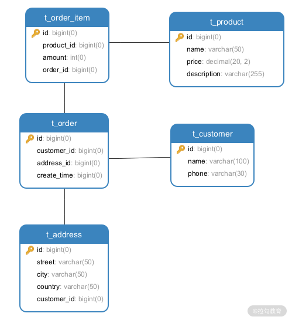

- 00 开篇词 领略 MyBatis 设计思维，突破持久化技术瓶颈.md.html
- 01 常见持久层框架赏析，到底是什么让你选择 MyBatis？.md.html
- 02 订单系统持久层示例分析，20 分钟带你快速上手 MyBatis.md.html
- 03 MyBatis 源码环境搭建及整体架构解析.md.html
- 04 MyBatis 反射工具箱：带你领略不一样的反射设计思路.md.html
- 05 数据库类型体系与 Java 类型体系之间的“爱恨情仇”.md.html
- 06 日志框架千千万，MyBatis 都能兼容的秘密是什么？.md.html
- 07 深入数据源和事务，把握持久化框架的两个关键命脉.md.html
- 08 Mapper 文件与 Java 接口的优雅映射之道.md.html
- 09 基于 MyBatis 缓存分析装饰器模式的最佳实践.md.html
- 10 鸟瞰 MyBatis 初始化，把握 MyBatis 启动流程脉络（上）.md.html
- 11 鸟瞰 MyBatis 初始化，把握 MyBatis 启动流程脉络（下）.md.html
- 12 深入分析动态 SQL 语句解析全流程（上）.md.html
- 13 深入分析动态 SQL 语句解析全流程（下）.md.html
- 14 探究 MyBatis 结果集映射机制背后的秘密（上）.md.html
- 15 探究 MyBatis 结果集映射机制背后的秘密（下）.md.html
- 16 StatementHandler：参数绑定、SQL 执行和结果映射的奠基者.md.html
- 17 Executor 才是执行 SQL 语句的幕后推手（上）.md.html
- 18 Executor 才是执行 SQL 语句的幕后推手（下）.md.html
- 19 深入 MyBatis 内核与业务逻辑的桥梁——接口层.md.html
- 20 插件体系让 MyBatis 世界更加精彩.md.html
- 21 深挖 MyBatis 与 Spring 集成底层原理.md.html
- 22 基于 MyBatis 的衍生框架一览.md.html
- 23 结束语 会使用只能默默“搬砖”，懂原理才能快速晋升.md.html
02 订单系统持久层示例分析，20 分钟带你快速上手 MyBatis
在开始深入分析 MyBatis 核心架构以及具体代码实现之前，我先通过一个示例来帮助你快速了解 MyBatis 中的常见概念以及其基础使用方法。
这里我会以一个简易订单系统的持久化层为例进行讲解，整体的讲解逻辑是这样的：
- 首先介绍订单系统 domain 层的设计，了解如何将业务概念抽象成 Java 类；
- 接下来介绍数据库表的设计，同时说明关系型的数据库表与面向对象模型的类之间的映射关系；
- 随后介绍订单系统的 DAO 接口层，DAO 接口层是操作数据的最小化单元，也是读写数据库的地基；
- 最后再简单提供了一个 Service 层和测试用例，用来检测前面的代码实现是否能正常工作。
现在几乎所有的 Java 工程都会使用 Maven 来管理 jar 包依赖，所以我们首先创建一个 Maven 项目，然后在 pom.xml 中添加如下 jar 依赖，这些 jar 包都是订单示例系统必不可少的依赖：
<dependencies>
<!--MyBatis依赖-->
<dependency>
<groupId>org.mybatis</groupId>
<artifactId>mybatis</artifactId>
<version>3.5.6</version>
</dependency>
<!--MySQL JDBC依赖，用来连接数据库-->
<dependency>
<groupId>mysql</groupId>
<artifactId>mysql-connector-java</artifactId>
<version>8.0.15</version>
</dependency>
<!--Guava依赖-->
<dependency>
<groupId>com.google.guava</groupId>
<artifactId>guava</artifactId>
<version>19.0</version>
</dependency>
<!--Junit依赖，用来执行单元测试-->
<dependency>
<groupId>junit</groupId>
<artifactId>junit</artifactId>
<version>4.10</version>
<scope>test</scope>
</dependency>
</dependencies>
domain 设计
在业务系统的开发中，domain 层的主要目的就是将业务上的概念抽象成面向对象模型中的类，这些类是业务系统运作的基础。在我们的简易订单系统中，有用户、地址、订单、订单条目和商品这五个核心的概念。
订单系统中 domain 层的设计，如下图所示：

简易订单系统 domain 层设计图
在上图中，Customer 类抽象的是电商平台中的用户，其中记录了用户的唯一标识（id 字段）、姓名（name 字段）以及手机号（phone 字段），另外，还记录了当前用户添加的全部送货地址。
Address 类抽象了用户的送货地址，其中记录了街道（street 字段）、城市（city 字段）、国家（country 字段）等信息，还维护了一个 Customer 类型的引用，指向所属的用户。
Order 类抽象的是电商平台中的订单，记录了订单的唯一标识（id 字段）、订单创建时间（createTime 字段），其中通过 customer 字段（Customer 类型）指向了订单关联的用户，通过 deliveryAddress 字段（Address 类型）指向了该订单的送货地址。另外，还可以通过 orderItems 集合（List 集合）记录订单内的具体条目。
OrderItem 类抽象了订单中的购物条目，记录了购物条目的唯一标识（id 字段），其中 product 字段（Product 类型）指向了该购物条目中具体购买的商品，amount 字段记录购买商品的个数，price 字段则是该 OrderItem 的总金额（即 Product.price * amount），Order 订单的总价格（totalPrice 字段）则是由其中全部 OrderItem 的 price 累加得到的。注意，这里的 OrderItem 总金额以及 Order 总金额，都不会持久化到数据，而是实时计算得到的。
Product 类抽象了电商平台中商品的概念，其中记录了商品的唯一标识（id 字段）、商品名称（name 字段）、商品描述（description 字段）以及商品价格（price 字段）。
结合前面的介绍以及类图分析，你可以看到：
- 通过 Customer.addresses 以及 Address.customer 这两个属性，维护了 Customer 与 Address 之间一对多关系；
- 通过 Order.customer 属性，维护了 Customer 与 Order 之间的一对多关系；
- 通过 Order.deliveryAddress 属性，维护了 Order 与 Address 之间的一对一关系；
- 通过 OrderItem.orderId 属性，维护了 Order 与 OrderItem 之间的一对多关系；
- 通过 OrderItem.product 属性，维护了 OrderItem 与 Product 之间的一对一关系。
数据库表设计
介绍完 domain 层的设计，下面我们再来看对应的数据库表设计，如下图所示：

简易订单系统数据库表设计
与前面的domain 层设计图相比，其中的各项是可以一一对应起来的。
- t_customer 表对应 Customer 类，t_product 表对应 Product 类。
- t_address 表对应 Address 类，其中 customer_id 列作为外键指向 t_customer.id，实现了 Customer 与 Address 的一对多关系。
- t_order_item 表对应 OrderItem 类，其中 product_id 列作为外键指向 t_product.id，实现了 OrderItem 与 Product 的一对一关系；order_id 列作为外键指向 t_order.id，实现了 Order 与 OrderItem 的一对多关系。
- t_order 表对应 Order 类，其中的 customer_id 列指向 t_customer.id，实现了 Customer 与 Order 的一对多关系；address_id 列指向 t_address.id，实现了 Order 与 Address 的一对一关系。
上述表中的其他字段与 domain 层中对应类中的字段也是一一对应，这里就不再重复了。
DAO 层
DAO 层主要是负责与持久化存储进行交互，完成数据持久化的相关工作，这里我们就介绍一下 如何使用 MyBatis 来开发 Java 应用中的持久层。
在 DAO 层中，需要先根据需求确定 DAO 层的基本能力，一般情况下，是针对每个 domain 类提供最基础的 CRUD 操作，之后在 DAO 层之上的 Service 层，就可以直接使用 DAO 层的接口，而无须关心底层使用的是数据库还是其他存储，也无须关心读写数据使用的是 SQL 语句还是其他查询语句，这就能够实现业务逻辑和存储的解耦。
1. DAO 接口与实现
下面，我们开始介绍简易订单系统中 DAO 接口的内容。
首先是 CustomerMapper 接口，其定义如下：
public interface CustomerMapper {
// 根据用户Id查询Customer(不查询Address)
Customer find(long id);
// 根据用户Id查询Customer(同时查询Address)
Customer findWithAddress(long id);
// 根据orderId查询Customer
Customer findByOrderId(long orderId);
// 持久化Customer对象
int save(Customer customer);
}
定义完 CustomerMapper 接口之后，我们无须真正实现 CustomerMapper 接口，而是在 /resources/mapper 目录下配置相应的配置文件—— CustomerMapper.xml，在该文件中定义需要执行的 SQL 语句以及查询结果集的映射规则。MyBatis 底层会生成一个实现了 CustomerMapper 接口的代理对象来执行 CustomerMapper.xml 配置文件中的 SQL 语句，实现 DAO 层的功能（MyBatis 如何生成代理对象等底层原理在本课程后面会深入分析，这里就先介绍该示例系统的相关内容）。
CustomerMapper.xml 的具体定义如下：
<mapper namespace="org.example.dao.CustomerMapper">
<!-- 定义映射规则 -->
<resultMap id="customerSimpleMap" type="Customer">
<!-- 主键映射 -->
<id property="id" column="id"/>
<!-- 属性映射 -->
<result property="name" column="name"/>
<result property="phone" column="phone"/>
</resultMap>
<!-- 定义映射规则 -->
<resultMap id="customerMap" type="Customer">
<!-- 主键映射 -->
<id property="id" column="id"/>
<!-- 属性映射 -->
<result property="name" column="name"/>
<result property="phone" column="phone"/>
<!-- 映射addresses集合，<collection>标签用于映射集合类的属性，实现一对多的关联关系 -->
<collection property="addresses" javaType="list" ofType="Address">
<id property="id" column="address_id"/>
<result property="street" column="street"/>
<result property="city" column="city"/>
<result property="country" column="country"/>
</collection>
</resultMap>
<!-- 定义select语句，CustomerMapper接口中的find()方法会执行该SQL，
查询结果通过customerSimpleMap这个映射生成Customer对象-->
<select id="find" resultMap="customerSimpleMap">
SELECT * FROM t_customer WHERE id = #{id:INTEGER}
</select>
<!-- 定义select语句，CustomerMapper接口中的findWithAddress()方法会执行该SQL，
查询结果通过customerMap这个映射生成Customer对象-->
<select id="findWithAddress" resultMap="customerMap">
SELECT c.*,a.id as address_id, a.* FROM t_customer as c join t_address as a
on c.id = a.customer_id
WHERE c.id = #{id:INTEGER}
</select>
<!-- CustomerMapper接口中的findByOrderId()方法会执行该SQL，
查询结果通过customerSimpleMap这个映射生成Customer对象-->
<select id="findByOrderId" resultMap="customerSimpleMap">
SELECT * FROM t_customer as c join t_order as t
on c.id = t.customer_id
WHERE t.customer_id = #{id:INTEGER}
</select>
<!-- 定义insert语句，CustomerMapper接口中的save()方法会执行该SQL，
数据库生成的自增id会自动填充到传入的Customer对象的id字段中-->
<insert id="save" keyProperty="id" useGeneratedKeys="true">
insert into t_customer (id, name, phone)
values (#{id},#{name},#{phone})
</insert>
</mapper>
接下来，我们看一下 AddressMapper 接口的定义，它主要是针对 Address 对象的 CRUD：
public interface AddressMapper {
// 根据id查询Address对象
Address find(long id);
// 查询一个用户的全部地址信息
List<Address> findAll(long customerId);
// 查询指定订单的送货地址
Address findByOrderId(long orderId);
// 存储Address对象，同时会记录关联的Customer
int save(@Param("address") Address address,
@Param("customerId") long customerId);
}
AddressMapper 接口对应的 AddressMapper.xml 配置文件中，同样定义了每个方法要执行的 SQL 语句以及查询结果与 Address 对象之间的映射关系，具体定义如下：
<mapper namespace="org.example.dao.AddressMapper">
<!-- find()、findAll()方法对应的<select>标签以及<resultMap>映射比较简单，这里不再展示，感兴趣的同学可以参考代码进行学习 -->
<!-- 定义select语句，AddressMapper接口中的findByOrderId()方法会执行该SQL，
查询结果通过addressMap这个映射生成Address对象-->
<select id="findByOrderId" resultMap="addressMap">
SELECT a.* FROM t_address as a join t_order as o
on a.id = o.address_id
WHERE o.address_id = #{id}
</select>
<!-- 定义insert语句，AddressMapper接口中的save()方法会执行该SQL，
数据库生成的自增id会自动填充到传入的Address对象的id字段中-->
<insert id="save" keyProperty="address.id" useGeneratedKeys="true">
insert into t_address (street, city, country, customer_id)
values (#{address.street},#{address.city},#{address.country},#{customerId})
</insert>
</mapper>
下面来看 ProductMapper 接口，其中除了根据 id 查询 Product 之外，还可以通过 name 进行模糊查询，具体定义如下：
public interface ProductMapper {
// 根据id查询商品信息
Product find(long id);
// 根据名称搜索商品信息
List<Product> findByName(String name);
// 保存商品信息
long save(Product product);
}
ProductMapper 接口对应的 ProductMapper.xml 配置文件中，定义了 Product 相关的 SQL 语句以及查询结果与 Product 对象之间的映射关系。ProductMapper.xml 配置文件中定义的 SQL 语句以及 ResultMap 映射比较简单，这里不再展示，你若感兴趣的话可以参考源码进行学习。
紧接着，我们再来看 OrderItemMapper 接口的定义，其中定义了 OrderItem 对象的操作，如下所示：
public interface OrderItemMapper {
// 根据id查询OrderItem对象
OrderItem find(long id);
// 查询指定的订单中的全部OrderItem
List<OrderItem> findByOrderId(long orderId);
// 保存一个OrderItem信息
long save(@Param("orderItem")OrderItem orderItem,
@Param("orderId") long orderId);
}
与之对应的 OrderItemMapper.xml 配置文件的定义如下：
<mapper namespace="org.example.dao.OrderItemMapper">
<!-- 定义t_order_item与OrderItem对象之间的映射关系-->
<resultMap id="orderItemtMap" type="OrderItem">
<id property="id" column="id"/>
<result property="amount" column="amount"/>
<result property="orderId" column="order_id"/>
<!--映射OrderItem关联的Product对象，<association>标签用于实现一对一的关联关系-->
<association property="product" javaType="Product">
<id property="id" column="product_id"/>
<result property="name" column="name"/>
<result property="description" column="description"/>
<result property="price" column="price"/>
</association>
</resultMap>
<!-- 定义select语句，OrderItemMapper接口中的find()方法会执行该SQL，
查询结果通过orderItemtMap这个映射生成OrderItem对象-->
<select id="find" resultMap="orderItemtMap">
SELECT i.*,p.*,p.id as product_id FROM t_order_item as i join t_product as p
on i.product_id = p.id WHERE id = #{id:INTEGER}
</select>
<!-- 定义select语句，OrderItemMapper接口中的findAll()方法会执行该SQL，
查询结果通过orderItemtMap这个映射生成OrderItem对象-->
<select id="findByOrderId" resultMap="orderItemtMap">
SELECT i.*,p.* FROM t_order_item as i join t_product as p
on i.product_id = p.id WHERE i.order_id = #{order_id:INTEGER}
</select>
<!-- 定义insert语句，OrderItemMapper接口中的save()方法会执行该SQL，
数据库生成的自增id会自动填充到传入的OrderItem对象的id字段中-->
<insert id="save" keyProperty="orderItem.id" useGeneratedKeys="true">
insert into t_order_item (amount, product_id, order_id)
values (#{orderItem.amount}, #{orderItem.product.id}, #{orderId})
</insert>
</mapper>
最后来看 OrderMapper 接口的定义，其中定义了查询、存储 Order 对象的相关方法，具体如下所示：
public interface OrderMapper {
// 根据订单Id查询
Order find(long id);
// 查询一个用户一段时间段内的订单列表
List<Order> findByCustomerId(long customerId, long startTime, long endTime);
// 保存一个订单
long save(Order order);
}
与 OrderMapper 接口对应的 SQL 语句定义在 OrderMapper.xml 配置文件中，如下所示：
<mapper namespace="org.example.dao.OrderMapper">
<!-- 定义t_order表查询记录与Order对象之间映射 -->
<resultMap id="orderMap" type="Order">
<!-- 主键映射 -->
<id property="id" column="id"/>
<!-- 属性映射 -->
<result property="createTime" column="create_time"/>
<!-- 映射customer字段 -->
<association property="customer" javaType="Customer">
<id property="id" column="customer_id"/>
</association>
<!-- 映射deliveryAddress字段 -->
<association property="deliveryAddress" javaType="Address">
<id property="id" column="address_id"/>
</association>
<!-- 这里并没有映射orderItems集合-->
</resultMap>
<!-- 定义select语句，OrderMapper接口中的find()方法会执行该SQL，
查询结果通过orderMap这个映射生成Order对象-->
<select id="find" resultMap="orderMap">
SELECT * FROM t_order WHERE id = #{id:INTEGER}
</select>
<!-- 定义select语句，OrderMapper接口中的findByCustomerId()方法会执行该SQL，
查询结果通过orderMap这个映射生成Order对象。注意这里大于号、小于号在XML中的写法-->
<select id="findByCustomerId" resultMap="orderMap">
SELECT * FROM t_order WHERE customer_id = #{id}
and create_date_time <![CDATA[ >= ]]> #{startTime}
and create_date_time <![CDATA[ <= ]]> #{endTime}
</select>
<!-- 定义insert语句，OrderMapper接口中的save()方法会执行该SQL，
数据库生成的自增id会自动填充到传入的Order对象的id字段中-->
<insert id="save" keyProperty="id" useGeneratedKeys="true">
insert into t_order (customer_id, address_id, create_time)
values (#{customer.id}, #{deliveryAddress.id}, #{createTime})
</insert>
</mapper>
2. DaoUtils 工具类
在 DAO 层中，除了定义上述接口和相关实现之外，还需要管理数据库连接和事务。在订单系统中，我们使用 DaoUtils 工具类来完成 MyBatis 中 SqlSession 以及事务的相关操作，这个实现非常简单，在实践中，一般会使用专门的事务管理器来管理事务。
下面是 DaoUtils 工具类的核心实现：
public class DaoUtils {
private static SqlSessionFactory factory;
static { // 在静态代码块中直接读取MyBatis的mybatis-config.xml配置文件
String resource = "mybatis-config.xml";
InputStream inputStream = null;
try {
inputStream = Resources.getResourceAsStream(resource);
} catch (IOException e) {
System.err.println("read mybatis-config.xml fail");
e.printStackTrace();
System.exit(1);
}
// 加载完mybatis-config.xml配置文件之后，会根据其中的配置信息创建SqlSessionFactory对象
factory = new SqlSessionFactoryBuilder()
.build(inputStream);
}
public static <R> R execute(Function<SqlSession, R> function) {
// 创建SqlSession
SqlSession session = factory.openSession();
try {
R apply = function.apply(session);
// 提交事务
session.commit();
return apply;
} catch (Throwable t) {
// 出现异常的时候，回滚事务
session.rollback();
System.out.println("execute error");
throw t;
} finally {
// 关闭SqlSession
session.close();
}
}
}
在 DaoUtils 中加载的 mybatis-config.xml 配置文件位于 /resource 目录下，是 MyBatis 框架配置的入口，其中配置了要连接的数据库地址、Mapper.xml 文件的位置以及一些自定义变量和别名，具体定义如下所示：
<configuration>
<properties> <!-- 定义属性值 -->
<property name="username" value="root"/>
<property name="id" value="xxx"/>
</properties>
<settings><!-- 全局配置信息 -->
<setting name="cacheEnabled" value="true"/>
</settings>
<typeAliases>
<!-- 配置别名信息，在映射配置文件中可以直接使用Customer这个别名
代替org.example.domain.Customer这个类 -->
<typeAlias type="org.example.domain.Customer" alias="Customer"/>
<typeAlias type="org.example.domain.Address" alias="Address"/>
<typeAlias type="org.example.domain.Order" alias="Order"/>
<typeAlias type="org.example.domain.OrderItem" alias="OrderItem"/>
<typeAlias type="org.example.domain.Product" alias="Product"/>
</typeAliases>
<environments default="development">
<environment id="development">
<!-- 配置事务管理器的类型 -->
<transactionManager type="JDBC"/>
<!-- 配置数据源的类型，以及数据库连接的相关信息 -->
<dataSource type="POOLED">
<property name="driver" value="com.mysql.jdbc.Driver"/>
<property name="url" value="jdbc:mysql://localhost:3306/test"/>
<property name="username" value="root"/>
<property name="password" value="xxx"/>
</dataSource>
</environment>
</environments>
<!-- 配置映射配置文件的位置 -->
<mappers>
<mapper resource="mapper/CustomerMapper.xml"/>
<mapper resource="mapper/AddressMapper.xml"/>
<mapper resource="mapper/OrderItemMapper.xml"/>
<mapper resource="mapper/OrderMapper.xml"/>
<mapper resource="mapper/ProductMapper.xml"/>
</mappers>
</configuration>
Service 层
介绍完 DAO 层之后，我们接下来再来聊聊 Service 层。
Service 层的核心职责是实现业务逻辑。在 Service 层实现的业务逻辑一般要依赖到前面介绍的 DAO 层的能力，将业务逻辑封装到 Service 层可以更方便地复用业务逻辑实现，代码会显得非常简洁，系统也会更加稳定。
我们先来看 CustomerService 实现，其中提供了注册用户、添加送货地址、查询用户基本信息、查询用户全部送货地址等基本功能，具体实现如下所示：
public class CustomerService {
// 创建一个新用户
public long register(String name, String phone) {
// 检查传入的name参数以及phone参数是否合法
Preconditions.checkArgument(!Strings.isNullOrEmpty(name), "name is empty");
Preconditions.checkArgument(!Strings.isNullOrEmpty(phone), "phone is empty");
// 我们还可以完成其他业务逻辑，例如检查用户名是否重复、手机号是否重复等，这里不再展示
return DaoUtils.execute(sqlSession -> {
// 创建Customer对象，并通过CustomerMapper.save()方法完成持久化
CustomerMapper mapper = sqlSession.getMapper(CustomerMapper.class);
Customer customer = new Customer();
customer.setName(name);
customer.setPhone(phone);
int affected = mapper.save(customer);
if (affected <= 0) {
throw new RuntimeException("Save Customer fail...");
}
return customer.getId();
});
}
// 用户添加一个新的送货地址
public long addAddress(long customerId, String street, String city, String country) {
// 检查传入参数是否合法
Preconditions.checkArgument(customerId > 0, "customerId is empty");
Preconditions.checkArgument(!Strings.isNullOrEmpty(street), "street is empty");
Preconditions.checkArgument(!Strings.isNullOrEmpty(city), "city is empty");
Preconditions.checkArgument(!Strings.isNullOrEmpty(country), "country is empty");
// 我们还可以完成其他业务逻辑，例如检查该地址是否超出了送货范围等，这里不再展示
return DaoUtils.execute(sqlSession -> {
// 创建Address对象并调用AddressMapper.save()方法完成持久化
AddressMapper mapper = sqlSession.getMapper(AddressMapper.class);
Address address = new Address();
address.setStreet(street);
address.setCity(city);
address.setCountry(city);
int affected = mapper.save(address, customerId);
if (affected <= 0) {
throw new RuntimeException("Save Customer fail...");
}
return address.getId();
});
}
public List<Address> findAllAddress(long customerId) {
// 检查用户id参数是否合法
Preconditions.checkArgument(customerId > 0, "id error");
return DaoUtils.execute(sqlSession -> {
// 执行AddressMapper.find()方法完成查询
AddressMapper mapper = sqlSession.getMapper(AddressMapper.class);
return mapper.findAll(customerId);
});
}
public Customer find(long id) {
// 检查用户id参数是否合法
Preconditions.checkArgument(id > 0, "id error");
return DaoUtils.execute(sqlSession -> {
// 执行CustomerMapper.find()方法完成查询
CustomerMapper mapper = sqlSession.getMapper(CustomerMapper.class);
return mapper.find(id);
});
}
public Customer findWithAddress(long id) {
// 检查用户id参数是否合法
Preconditions.checkArgument(id > 0, "id error");
return DaoUtils.execute(sqlSession -> {
// 执行CustomerMapper.findWithAddress()方法完成查询
CustomerMapper mapper = sqlSession.getMapper(CustomerMapper.class);
return mapper.findWithAddress(id);
});
}
}
接下来看 ProductService 实现，其中提供了新增商品、根据 id 精确查询商品以及根据名称模糊查询商品的基础功能，具体实现如下：
public class ProductService {
// 创建商品
public long createProduct(Product product) {
// 检查product中的各个字段是否合法
Preconditions.checkArgument(product != null, "product is null");
Preconditions.checkArgument(!Strings.isNullOrEmpty(product.getName()), "product name is empty");
Preconditions.checkArgument(!Strings.isNullOrEmpty(product.getDescription()), "description name is empty");
Preconditions.checkArgument(product.getPrice().compareTo(new BigDecimal(0)) > 0,
"price<=0 error");
return DaoUtils.execute(sqlSession -> {
// 通过ProductMapper中的save()方法完成持久化
ProductMapper productMapper = sqlSession.getMapper(ProductMapper.class);
return productMapper.save(product);
});
}
public Product find(long productId) {
// 检查productId参数是否合法
Preconditions.checkArgument(productId > 0, "product id error");
return DaoUtils.execute(sqlSession -> {
// 通过ProductMapper中的find()方法精确查询Product
ProductMapper productMapper = sqlSession.getMapper(ProductMapper.class);
return productMapper.find(productId);
});
}
public List<Product> find(String productName) {
// 检查productName参数是否合法
Preconditions.checkArgument(Strings.isNullOrEmpty(productName), "product id error");
return DaoUtils.execute(sqlSession -> {
// 根据productName模糊查询Product
ProductMapper productMapper = sqlSession.getMapper(ProductMapper.class);
return productMapper.findByName(productName);
});
}
}
最后，再来看 OrderService 对 Order 订单业务的封装，其中封装了创建订单和查询订单的逻辑，另外，还提供了实时计算订单总价的功能，具体实现如下所示：
public class OrderService {
// 创建订单
public long createOrder(Order order) {
Preconditions.checkArgument(order != null, "order is null");
Preconditions.checkArgument(order.getOrderItems() != null
&& order.getOrderItems().size() > 0,
"orderItems is empty");
return DaoUtils.execute(sqlSession -> {
OrderMapper orderMapper = sqlSession.getMapper(OrderMapper.class);
OrderItemMapper orderItemMapper = sqlSession.getMapper(OrderItemMapper.class);
// 调用OrderMapper.save()方法完成订单的持久化
long affected = orderMapper.save(order);
if (affected <= 0) {
throw new RuntimeException("Save Order fail...");
}
long orderId = order.getId();
for (OrderItem orderItem : order.getOrderItems()) {
// 通过OrderItemMapper完成OrderItem的持久化
orderItemMapper.save(orderItem, orderId);
}
return orderId;
});
}
// 根据订单id查询订单的全部信息
public Order find(long orderId) {
// 检查orderId参数是否合法
Preconditions.checkArgument(orderId > 0, "orderId error");
return DaoUtils.execute(sqlSession -> {
// 查询该订单关联的全部OrderItem
OrderItemMapper orderItemMapper = sqlSession.getMapper(OrderItemMapper.class);
List<OrderItem> orderItems = orderItemMapper.findByOrderId(orderId);
// 查询订单本身的信息
OrderMapper orderMapper = sqlSession.getMapper(OrderMapper.class);
Order order = orderMapper.find(orderId);
order.setOrderItems(orderItems);
// 计算订单总额
order.setTotalPrice(calculateTotalPrice(order));
// 查询订单关联的Address
AddressMapper addressMapper = sqlSession.getMapper(AddressMapper.class);
Address address = addressMapper.find(order.getDeliveryAddress().getId());
order.setDeliveryAddress(address);
return order;
});
}
private BigDecimal calculateTotalPrice(Order order) {
List<OrderItem> orderItems = order.getOrderItems();
BigDecimal totalPrice = new BigDecimal(0);
for (OrderItem orderItem : orderItems) {
BigDecimal itemPrice = orderItem.getProduct().getPrice()
.multiply(new BigDecimal(orderItem.getAmount()));
orderItem.setPrice(itemPrice);
totalPrice.add(itemPrice);
}
return totalPrice;
}
}
测试用例
介绍完 Service 之后，下面我们就来编写一个简单的测试用例，测试一下 Service 层和 DAO 层的实现是否正确，具体的测试用例如下所示：
public class CustomerServiceTest {
private static CustomerService customerService;
private static OrderService orderService;
private static ProductService productService;
@Before
public void init() { // 执行测试用例之前，初始化Service层的各个实现
customerService = new CustomerService();
orderService = new OrderService();
productService = new ProductService();
}
@Test
public void test01() {
// 创建一个用户
long customerId = customerService.register("杨四正", "12345654321");
// 为用户添加一个配送地址
long addressId = customerService.addAddress(customerId,
"牛栏村", "牛栏市", "矮人国");
System.out.println(addressId);
// 查询用户信息以及地址信息
Customer customer = customerService.find(customerId);
System.out.println(customer);
Customer customer2 = customerService.findWithAddress(customerId);
System.out.println(customer2);
List<Address> addressList = customerService.findAllAddress(customerId);
addressList.stream().forEach(System.out::println);
// 入库一些商品
Product product = new Product();
product.setName("MyBatis课程");
product.setDescription("深入MyBatis源码的视频教程");
product.setPrice(new BigDecimal(99));
long productId = productService.createProduct(product);
System.out.println("create productId:" + productId);
// 创建一个订单
Order order = new Order();
order.setCustomer(customer); // 买家
order.setDeliveryAddress(addressList.get(0)); // 配送地址
// 生成购买条目
OrderItem orderItem = new OrderItem();
orderItem.setAmount(20);
orderItem.setProduct(product);
order.setOrderItems(Lists.newArrayList(orderItem));
long orderId = orderService.createOrder(order);
System.out.println("create orderId:" + orderId);
Order order2 = orderService.find(orderId);
System.out.println(order2);
}
}
总结
在这一讲，我们介绍了如何使用 MyBatis 实现简易订单系统的持久化层：首先介绍了订单系统 domain 层的设计，将用户、订单、商品等业务概念抽象成了对应的 Customer、Order、Product 等 Java 类；接下来分析了订单系统持久层中数据库表的设计，主要是从关系模型角度抽象业务概念；随后又讲解了订单系统的 DAO 接口层，定义了操作数据的基本方法；最后我们提供了一个 Service 类去实现简单的业务逻辑以及相关的测试用例。
在本讲的末尾，我给你留一个小任务：在现有源码基础上，将各个 DAO 接口的实现调通，并编写对应的单元测试进行检查。